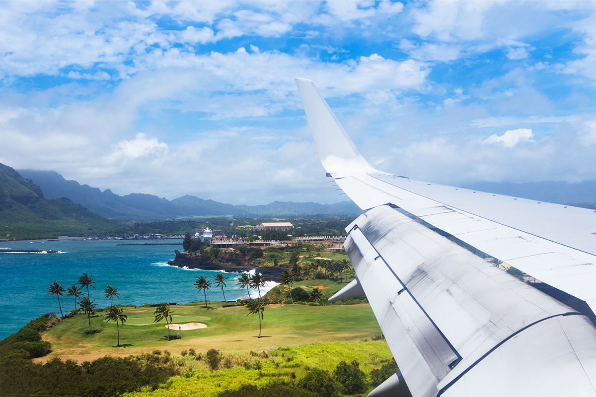
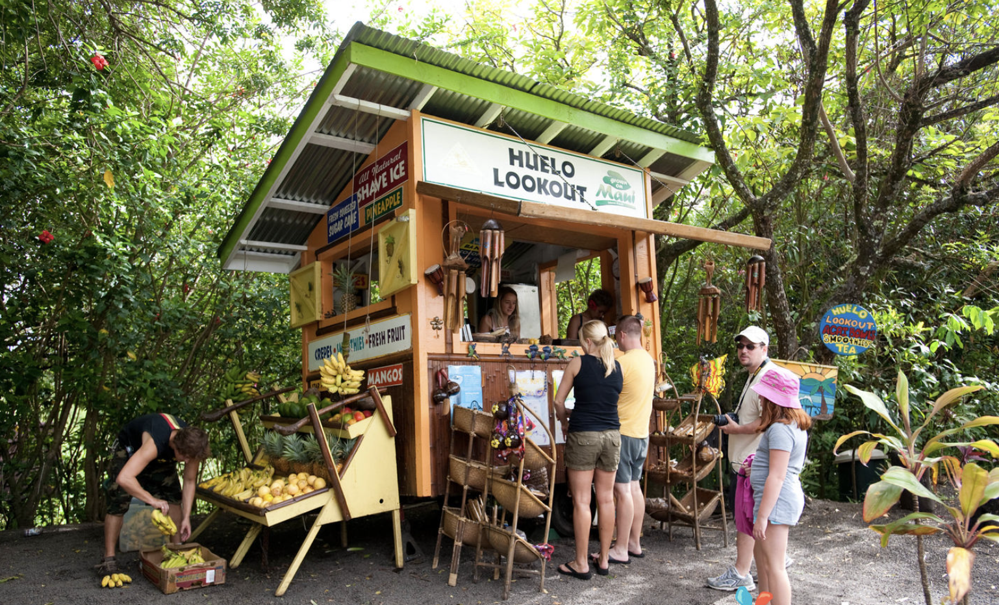
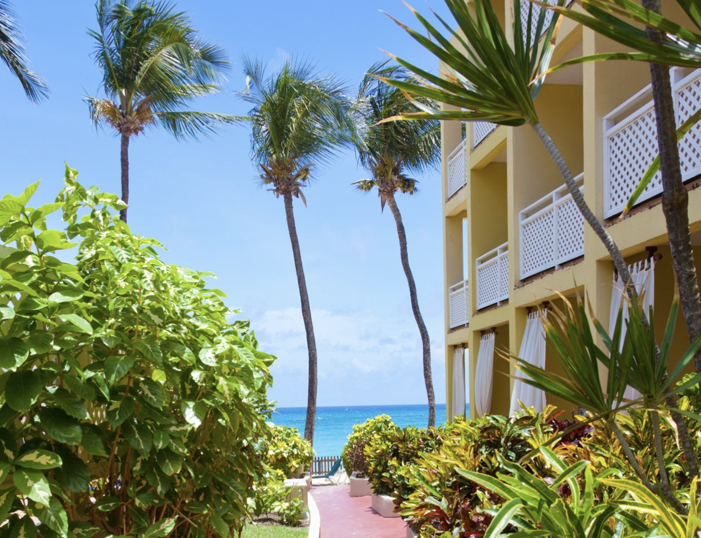

Problems, Problems, Problems!
 Native Hawaiians have made it clear that they do not want tourists visiting the islands because of COVID-19. However, there are many other reasons other than this pandemic that is making natives hesitant about tourists which are the lack of transportation, traffic congestion, and surplus of trash. This situation is eerily similar to Venice’s situation.
Not only are these hesitancies caused by the relaxation of regulations impacted Hawaii but the water shortage has caused another problem. According to a report from The Washington Post, residents like Maui County are facing up to $500 in fines for using water for nonessential activities like watering the lawn or washing their cars. This problem has resulted from the drought conditions at the time. However, the residents are not the ones using all this water, it is the hotel and tourism industry. However, the burden is falling on the resident’s shoulders as the hotel and tourism industry remains unregulated.
Information You Should Know Before Traveling to Hawaii!
The first thing you should know is that Hawaii is expensive, especially when eating out so make sure you try to score a cheaper meal by looking for early bird specials. Another way to get cheaper meals is by finding food trucks and there are plenty. Before coming make sure you bring a few snacks from home in case of an emergency. The second thing you should know is that not all residents of Hawaii are Hawaiian. Visitors should be aware of this before arriving to avoid causing offense. In Hawaii, only people of Hawaiian ancestry are called Hawaiian, as the term specifically refers to a descendant of the original Polynesian settlers. Other locals even those born or even raised on the islands refer to themselves as islanders or Hawaii residents. These two things are very important to remember, but there is more to Hawaii than just the food and the people.
One good thing about Hawaii is that all the beaches are public. Much of the land across Hawaii’s islands are government-owned. The law decrees that anything below the highest wave line is public. There are also many islands to choose to visit in Hawaii. When planning your trip you must keep in mind that all the islands may have plenty in common but each offers unique things that may or may not suit your travel tastes. For example, Maui and the Big Island are great for families, Kauai is amazing for hiking, and Maui and Oahu have great beach resort hotels. While traveling may be fun, make sure to stay safe. COVID-19 is still a real thing in 2022 so wear a mask when needed and get vaccinated.
Family Ran Hotels in Hawaii
When traveling to Hawaii it is important to account for the Hawaiian natives or indigenous people there. It is important to support them as most of the hotel and tourism industry in Hawaii is dominated by the non-indigenous people of Hawaii. There are many hotels in Hawaii that are owned by Hawaiians. For example, a Hawaiian family owns and operates a hotel called Mauian Hotel at Napili Bay.
This Hawaiian family has owned this 44-unit beachfront hotel for a number of years. This hotel has the perfect location, with some basic rooms and upgraded suites for those who want a little bit of luxury. This hotel is great for families and the access to nearby Napili Bay is unbeatable, even the larger resorts don’t get this close. The hotel also maintains a low-key ambiance, has a great breakfast, and has perfect interior decor and gardens.